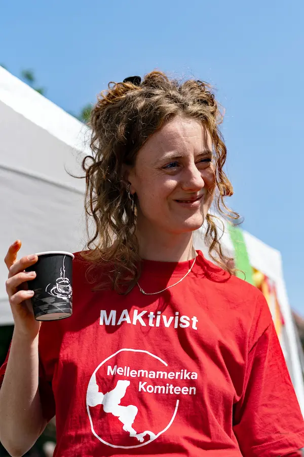
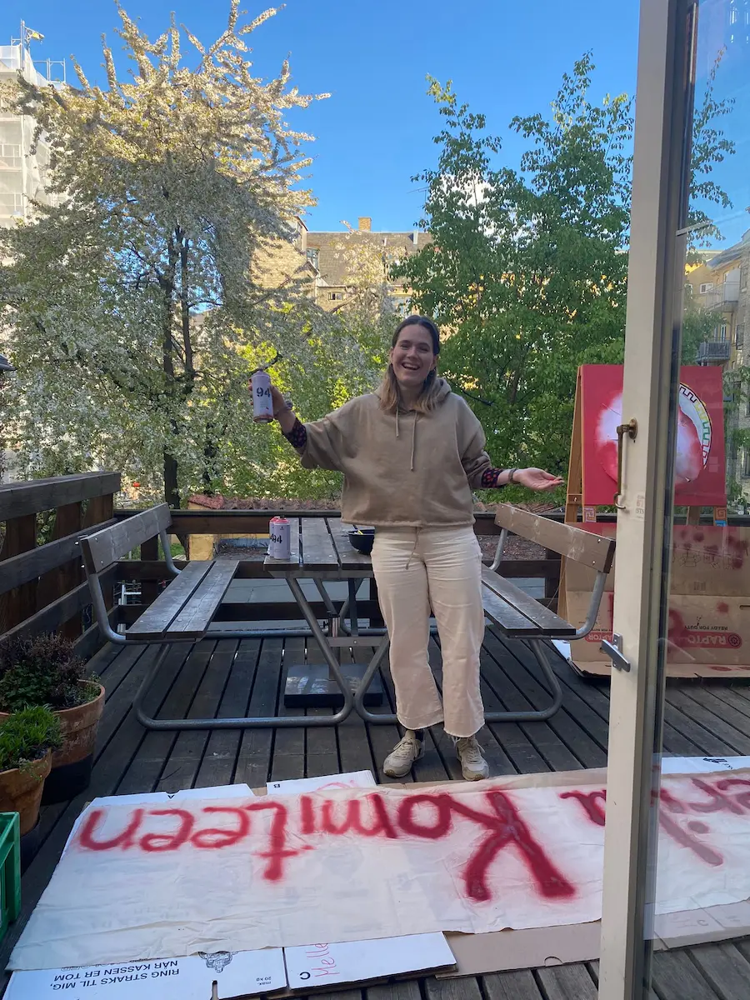
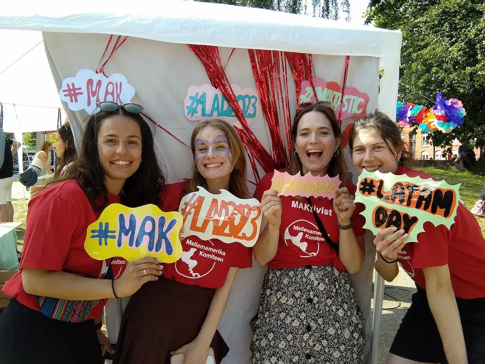

Frivillig hos MAK
Velkommen til Mellemamerika Komitéen
Din indflydelse og læring hos MAK
I MAK drives alt af frivillige, hvilket giver dig en unik mulighed for selvbestemmelse og
læring
gennem
vores projektgrupper og aktivitetsgrupper.
Du har direkte indflydelse på enhver udviklingsfase i et projekt eller kan deltage i
kampagnearbejde.
Ved at engagere dig i en projektgruppe hos MAK får du hands-on erfaring inden for
udviklingsområdet
og
konkrete færdigheder inden for projektarbejde. Det inkluderer at udforme ansøgninger til
donorer,
dialog
med vores partnere i Mellemamerika og opbygge solidt lokalt kendskab.
Sammenspil af projekter og fællesskab hos MAKtivister
Vi er organiseret i forskellige baggrundsgrupper, der arbejder med diverse projekter og
kampagner.
Læs
mere om dem under vores arbejde.
Som frivillig MAKtivist bliver du en del af et stærkt socialt fællesskab. Vi tager vores
projekter
seriøst, men vægter også sociale arrangementer, såsom julefrokoster, fester i forbindelse
med
forårsseminar og arbejdsweekender.
Tilpasning og engagement hos MAK
I MAK er du frivillig på dine egne præmisser. Det er muligt at være en del af en gruppe,
uanset
hvor
i
landet du befinder dig. Måske kan du bidrage online? Eller er du i København eller Århus et
par
gange om
året?
Uanset hvad, vil vi gerne høre fra dig og gøre vores bedste for at matche dig med den
aktivitet
eller projektgruppe, der passer bedst til dine behov og erfaringer!
Spørgsmål?
Du er altid velkommen som frivillig hos Mellemamerika Komitéen.
Kontakt os på info@makomiteen.dk for
mere information!
- 
- 
- 
Nedenfor finder du en oversigt over vores forskellige grupper hos MAK.
Projektgrupper:
- Solidaritetsrejser til Mellemamerika
- Rejsekoordinering (planlægning af solidaritetsrejserne)
- MAKkult
- Minedrift og oprindelig befolkning i Guatemala
- Kvindeligt migrant netværk i Costa Rica
- REMO - kvindenetværk i Nicaragua
Projektgrupper hos MAK:
Solidaritetsrejser til Mellemamerika:
MAK sender frivillige på solidaritetsrejser af seks eller 12 uger. På grund af usikre forhold i Nicaragua har vi midlertidigt stoppet rejseaktiviteterne i landet.
MAKKULT:
Arbejder for positiv social forandring i Mellemamerika gennem kunst, kultur og kommunikation. Fokuserer på ungdomsgrupper i Guatemala for at skabe et bedre samfund ved brug af kreativitet.
Kvindeligt Migrant Netværk i Costa Rica:
Et projekt i forlængelse af solidaritetsrejsen 2023. Samarbejder med organisationer og netværk for at støtte Nicaraguanske migranter i Costa Rica gennem workshops og oplysningsarbejde.
REMO - Kvindenetværket på øen Ometepe:
Støtter kvinder fra 25 landsbysamfund i at løse problemer og håndhæve deres rettigheder. Gruppen er primært placeret i Aarhus, men nogle medlemmer er bosat i København.
Minedrift og Oprindelig Befolkning i Guatemala:
Yderligere information findes ved at kontakte os.
Aktivitetsgrupper:
- Sprogcafé og folkekøkken
- Latinamerika Dag
- MAMA-redaktionen
- Kommunikation (SoMe)
- Hjemmeside
- Netværk: Nicaragua-netværk i København
Engagér dig i Aktivitetsgrupper hos MAK:
Eventgruppen:
Planlæg og afhold forskellige kulturelle arrangementer om Mellemamerika. Vi støtter kreative ideer og fokuserer på at skabe opmærksomhed gennem events, kampagner og festivaler.
MAMA-redaktionen:
Bidrag til vores medlemsblad med artikler, interviews og reportager fra Mellemamerika. Hvis du har erfaring med layout, tekstopsætning, fotografering eller andet relevant, så lad os vide, hvad du brænder for.
Hjemmesideopdatering:
Deltag i opdatering og forbedring af vores hjemmeside. Vi ønsker at gøre siden mere brugervenlig og indholdsrig.
Kommunikation:
Sprede kendskab til MAK og vores arbejde gennem sociale medier og artikelskrivning.
MAKsnak:
Vores podcastgruppe formidler nyheder om Mellemamerika på dansk og byder velkommen til medlemmer fra hele landet.
Bidrag til Sprogcaféens Succes!
Planlægning og Koordinering af Sprogcaféarrangementer
Ønsker du at være en del af planlægningen og forberedelserne til vores
sprogcaféarrangementer?
Hos
Centralamerikakomiteen har du mulighed for at blive frivillig og hjælpe med at gøre
vores
sprogcaféer
til en succes!
Bidrag med Tid og Energi til Sprogcaféernes Succes
Som en frivillig spiller du en afgørende rolle i skabelsen af et åbent miljø, der fremmer kulturel forståelse og sprogudvikling. Din indsats vil være med til at transformere sprogcaféen til en oplevelse, hvor alle deltageres minder vil blive beriget og værdsat.
Bliv en Vigtig Del af Vores Sprogcafé
Vi leder efter entusiastiske individer, ivrige efter at skabe fantastiske og berigende oplevelser. Bliv en væsentlig del af vores hold og lad os sammen forme sprogcaféerne til unikke og uforglemmelige begivenheder!
✨ ¡Hasta pronto! (Vi ses snart!) ✨
Kontakt
Kontakt MAKs landssekretær Helene Silva-Sørensen på info@makomiteen.dk eller ring på 21521740 for at blive introduceret til den relevante kontaktperson. Bliv en del af MAK - Gør en forskel, skab forandring!